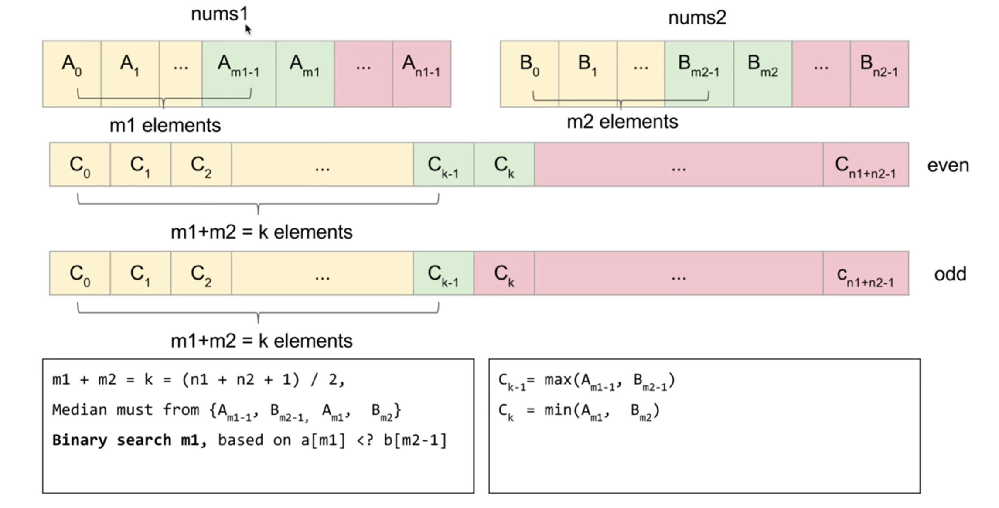

问题描述:
给定两个排好序的数组，大小分别为$m$和$n$，找到两个数组的中位数（median），要求时间复杂度不超过$O(log(m+n))$.
Example 1:
nums1 = [1, 3]
nums2 = [2]
The median is 2.0
Example 2:
nums1 = [1, 2]
nums2 = [3, 4]
The median is (2 + 3)/2 = 2.5
补充说明：
中位数：是在一组数据中居于中间的数(特别注意的地方是：这组数据之前已经经过升序排列！！！)，即在这组数据中，有一半的数据比它大，有一半的数据比它小。如果这组数据包含偶数个数字，中值是位于中间的两个数的平均值。
解决方法:

主要思路：
如上图所示，想要找到两个数组合并后的中位数，即寻找 $C_{k-1}$ 和 $C_k$ 的值，即找到合并后数组的第K个元素。
思路1：
依次从数组nums1和nums2数组的头部弹出较小的值，直到找到第K个元素。这种算法的时间复杂度为 $O(m+n)$。
思路2：
假设从nums1中取出前m1个元素，nums2中取出前m2个元素，共同组成合并后数组的前k个元素。当：
$$
A_{m_1}>=B_{m_2-1}\quad\&\&\quad B_{m_2}>=A_{m_1-1}
$$
成立时，才为合理解，否则说明m1取得过大或者过小。
当找到m1时，那么：
$$
C_{k-1}=max(A_{m1-1},B_{m_2-1})
$$
$$
C_k=min(A_{m_1},B_{m_2})
$$
当$(m+n)$为奇数时，中位数为$C_{k-1}$ 。偶数时为$0.5*(C_{k-1}+C_k)$ 。
代码如下：
Runtime: 69 ms, beats 25.76% of cpp submissions.
class Solution {
public:
double findMedianSortedArrays(vector<int>& nums1, vector<int>& nums2) {
const int n1 = nums1.size();
const int n2 = nums2.size();
if (n2 < n1) return findMedianSortedArrays(nums2, nums1);
const int k = (n1 + n2 + 1) / 2;
int l = 0;
int r = n1;
while (l < r) {
const int m1 = (l + r) / 2;
const int m2 = k - m1;
if (nums1[m1] < nums2[m2 - 1])
l = m1 + 1;
else {
r = m1;
}
}
const int m1 = r;
const int m2 = k - m1;
const int c1 = max(m1 <= 0 ? INT_MIN : nums1[m1 - 1],
m2 <= 0 ? INT_MIN : nums2[m2 - 1]);
if ((n1 + n2) % 2) return c1; // even
const int c2 = min(m1 >= n1 ? INT_MAX : nums1[m1],
m2 >= n2 ? INT_MAX : nums2[m2]);
return (c1 + c2) * 0.5;
}
};